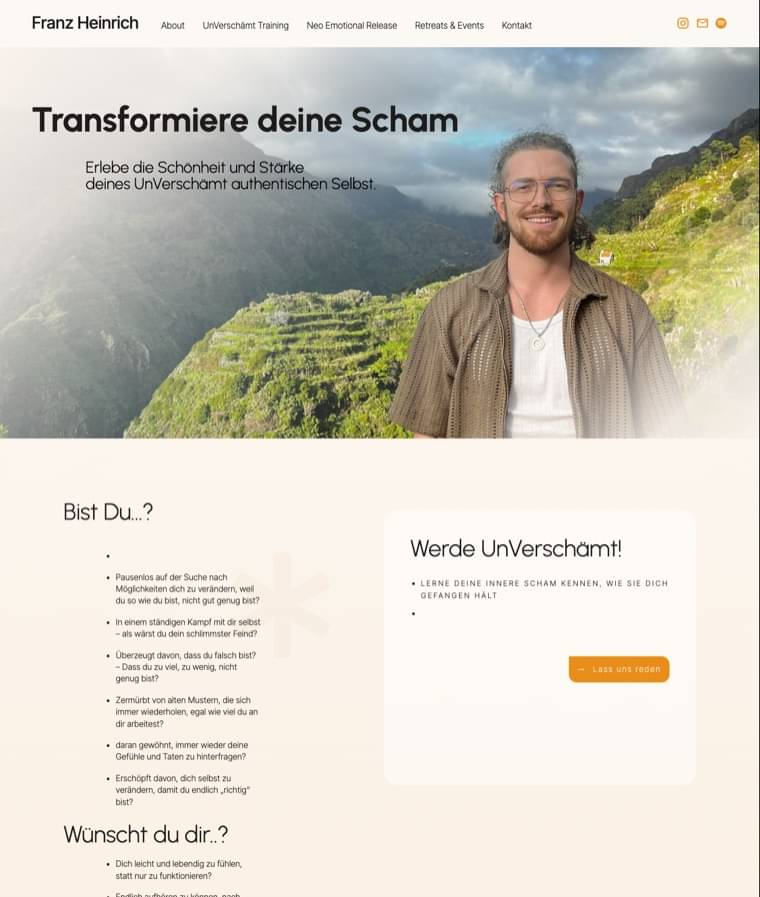
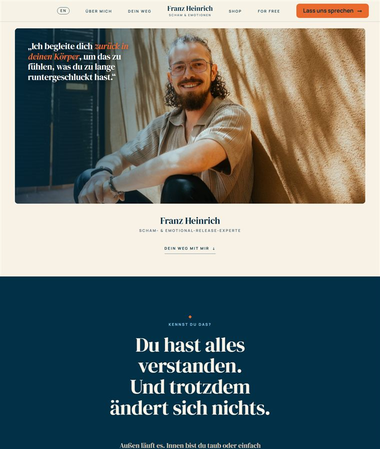
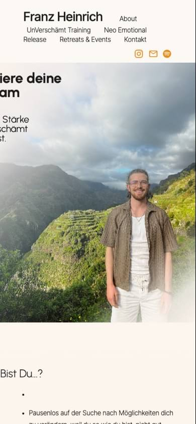
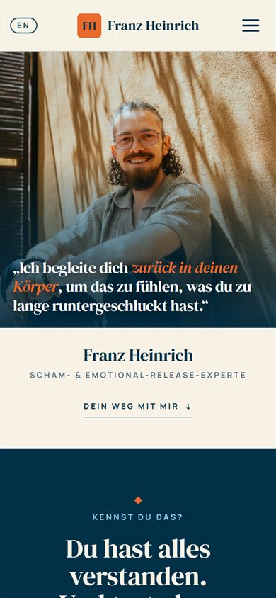

Franz, deine Struktur ist drin.
Weniger Blau, dein UnVerschämt-Monat als Herzstück, Freebie mit Anmeldung, eine eigene Shop-Seite — und deine Bilder aus dem Drive an den Stellen, wo du sie haben wolltest. Jetzt fehlen vor allem noch deine Worte und ein paar Links.
Deine Seite ansehenFünf Seiten, wie in deinem Dokument.
Home
Bild + Zitat, Kennst du das?, 01–03, Stimme, Freebie, Text für deine Leute, Lern mich kennen, Stimme, Über mich, zwei Stimmen, Lass uns reden.
Ansehen → Die wichtigsteDein UnVerschämt-Monat
Ablauf nach Wochen aus deinem PDF, Kathi, für dich / nicht für dich, Investment, Disclaimer, deine Methode, FAQ.
Ansehen → Dein PitchÜber mich
Bild gleich am Anfang, Vorstellung, Story mit alten Bildern, Self-Testimonial, Reise, Freebie, Facts, Zertifikate, Steckbrief, Zitat.
Ansehen → KurzFor free
Laptop, Tablet, Handy wie bei Lydia, Anmeldung, darunter Podcast, Instagram, Playlists.
Ansehen → NeuShop
Rituale, Vortrag, Bundle, Gutschein, Feedback zu den Angeboten, FAQ und eine Nachricht von dir.
Ansehen → VerstecktNach der Anmeldung
Die Seite, auf die man nur über die Freebie-Anmeldung kommt: Video, Meditation, Integration, Playlist.
Ansehen →Was du gesagt hast — und was daraus wurde.
| Du | Jetzt auf der Seite |
|---|---|
| „Die vorherige Version, wo nicht alles so viel blau ist, doch geiler“ | Helles Creme ist wieder der Grund. Navy kommt nur noch als einzelne Abschnitte dazwischen, Orange für Knöpfe und deine erste Stimme. Das hellere Blau nur noch als kleiner Akzent. |
| Kein Video im Kopf, „das Bild passt“ | Bleibt dein Bild. Den Text oben schreibst du neu — aus deinen 5 Ps. |
| Menü: Über mich, Dein Weg, Franz Heinrich, Shop, For free | Genau so. Rechts daneben der orange Knopf. |
| „Kennenlernen taugt mir nicht“ | Der Knopf heißt jetzt Lass uns sprechen. Unten auf der Seite: „Kostenloses Kennenlerngespräch buchen“ (45 Minuten) oder „Oder schreib mir auf WhatsApp“. |
| 01 heißt nicht mehr 1:1 Session, sondern dein UnVerschämter Monat | „01 · Dein UnVerschämt-Monat“ mit deinem Bild „Home - Offer“, ca. 180 Minuten, vor Ort · online. „Und danach, wenn es passt“ ist raus. |
| 02 und 03 mit Bildern, zuschneiden wie im Dokument | Einzelbegleitung: dein Gesicht und der Hinterkopf der Frau. Retreat: ohne das Gesicht der Frau rechts. Den Namen für 02 entscheidest du noch. |
| Erstes Testimonial in der Brand-Farbe, wie im Beispiel | Nicole auf Orange mit rundem Foto und deinen Fettungen. |
| Dann Freebie mit Mail-Anmeldung, Text für die Zielgruppe, „Lern mich erst mal kennen“ | In dieser Reihenfolge. Die Anmeldung sieht schon fertig aus, verschickt aber noch nichts — das Mail-Tool richten wir als Nächstes ein. |
| Zweites Testimonial, dann Über mich, dann zwei kurze Stimmen auf deinem Hintergrundbild | Lukas in der Langfassung, Über mich mit deinem Bild, danach Denise und Maren in zwei Boxen auf „Home - Hintergrund Testimonials“. |
| Über mich: Bild am Anfang, Pitch, Story, Self-Testimonial, Reise, Freebie, Stimmen, Facts, Zitat; Video raus | Alles so gebaut, mit deinen alten Bildern in der Story und beiden NER-Zertifikaten. |
| Monat: erst Ablauf, dann Kathi mit Disclaimer, für dich / nicht, dann Investment | Ablauf Woche für Woche aus deinem PDF. Kathis Karte ohne die medizinischen Sätze (Jans Wahl), der Hinweis direkt darunter. Investment: München, Nürnberg, Regensburg, Ingolstadt · überall online · ca. 180 Min. · 420 € vor Ort / 390 € online. |
| Shop wie bei Lydia | Morgenritual (2 × 15 Min. + Bonus 60 Min.), „Bewusst Gefühle fühlen“, Morning Ritual auf Englisch, Bundle, Gutschein, FAQ und eine Nachricht von dir im UnVerschämt-Ton. |
Zieh den Griff nach links und rechts.


Bisher Neu

Was jetzt noch fehlt.
Alles, was auf der Seite mit „Platzhalter“ steht, ist für deine Worte reserviert.
- Deine Texte. Pitch aus den 5 Ps (oben auf Start und Über mich), Text für deine Zielgruppe, deine Story, dein Self-Testimonial, „Meine Arbeit“, FAQ, die Nachricht im Shop.
- Zwei Links. Google-Kalender für das Kennenlerngespräch (45 Min.) und deine WhatsApp-Business-Nummer.
- Namen. Für 02 (Einzelbegleitung, Langfristige Begleitung, Jahresbegleitung oder UnVerschämt Training?) und die Zeile unter deinem Namen oben.
- Freebie. Willkommensvideo, die Meditation als Audio, Integrationsvideo, Playlist-Link — und welches Mail-Tool wir nehmen.
- Shop. Preise und Whop-Links je Angebot, was ins Bundle gehört, die Danke-Seite nach dem Kauf.
- Kathis Video. Gekürzt (die Stelle zu Cortison und Asthma raus oder rechtlich prüfen lassen) und als nicht gelistetes YouTube- oder Vimeo-Video — 162 MB sind zu groß für die Seite.
- Freigaben. Jede Stimme vor dem Livegang von der Person freigeben lassen.
Feedback-Runde Ende Oktober?
Such dir einen Termin aus — rund 30 Minuten, dann gehen wir zusammen durch.
Termin aussuchenÖffnet unseren Kalender in einem neuen Tab. Diese Seite bleibt komplett cookiefrei.